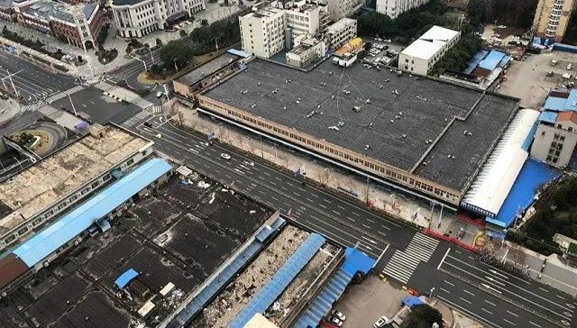

火了一年的物业公司，到时候检验真正实力了
原文链接 备份链接 记者：傅林林 “ 小区物业管理受到最严峻考验。 ” 2020年的春节因为疫情而显得格外特殊，足不出户和口罩成了标配，抖音里到处都是在家里旅游的段子。但对于各个社区来说，物业从业者却要比任何时候都繁忙。 随着疫情的扩散， …
正在“休市”中的华南海鲜市场。
记者：杨舒鸿吉
“
疫情爆发至今51天，位于武汉市疫情一级防控区域的万科下属三个小区，正静待“拐点”到来。
”
郑宗保说，他已经快30天没与妻儿见面了。这是他做物业经理13年来的头一次。
连续51天的不间断高强度工作，在他职业生涯中也是不多见的。
往年的除夕夜，他都会在负责的小区里巡查一番安保情况，然后回到家和家人吃上一顿年夜饭，看看春晚。
但是庚子年春节，这样的惯例因为一场新冠疫情落了空。
1月22日武汉封城前夕，郑宗保的家人回荆州老家过年。“即使家人选择留守武汉，我下班后也不敢回家。”他工作的地方与此次疫情最早的集中发生地–华南海鲜市场仅一墙之隔。
郑宗保是武汉万科物业汉口区域经理，是这家地产公司在该区域6个小区的物业总负责人。其中，他管辖的万科汉口传奇、唐樾、悦庭三小区，因比邻华南海鲜市场，被武汉市列为疫情一级管控区域。
实际上，疫情爆发之前，华南海鲜城这座超级市场的危险，在小区业主眼里也是随处可见的。
悦庭业主李冲表示，“华南海鲜市场里面充斥着腐臭的味道，烂菜叶子随处可见，污水横流，脚一踩进去，鞋子都会变黑。业主曾多次投诉要求主管部门将市场搬迁，但均无下文。”
2019年12月底，华南海鲜市场发现“不明原因病毒”时，郑宗保提高了警惕，“因为小区内有不少就是华南海鲜市场租户，还有自如、蛋壳这类的合租公寓。”资料显示，首批发病的新冠肺炎患者中，其中一人就租住在这里。
这里是疫情的“核心地带”，小区则是“核心地带的CBD”，李冲这样描述当时的处境。他庆幸疫情在后来的时间里并未在小区大规模流行。
和李冲不同，郑宗保对于病毒的警觉，源于17年前他抗击非典时的记忆与经验。彼时，郑宗保是一名在山东青岛服役的军人，“当时为了支援地方抗击疫情，我们的部队负责在道口参与执勤。”
依照当时的经验，2019年的12月31日，“我们预计了最坏的结果，所以当时跟集团做了汇报，紧急采购了84消毒液，防尘口罩，以及一次性医用口罩，并启动了公共区域消毒工作，以及普及防控宣传措施。”郑宗保说。
物资采购到位后次日，横跨两个街区的华南海鲜市场宣布“休市”。
但业主中很少有人警觉，极少有人出门戴上口罩，郑宗保回忆说，直到1月15日，医护人员被传染的消息在业主群内传播，才让华南海鲜市场的邻居们开始觉得危险。
此后，业主们纷纷打电话询问物业疫情的情况，包括“小区内有没有确诊病例？疫情到底严不严重？”面对这些问题，郑宗保坦言，自己手上的信息也十分有限。但他认为，已经持续了半个月的防控措施，为业主争取了时间。
业主的紧张情绪很快传递到物业的职工群体中，“一位90后的前台小姑娘，家里人听闻她在华南海鲜市场附近小区上班后，每天打来三个视频电话询问身体情况，生怕她感染。家人的担忧让小姑娘好几次落泪。”郑宗保说，“作为物业行业，我们的服务是不能间断的。在加强员工防护措施的同时，尽力确保项目不停摆。”

郑宗保正在进行小区消毒作业。
1月23日、26日，武汉相继宣布关闭进出城通道，并在主要城区内对机动车禁行。社区居民的紧张情绪迎来顶峰。
当时，物业“管家”杨杰的手机每天都处于被“打爆”的状态。他需要每天拿着三个手机回应业主的询问，内容包括小区发病情况，以及疫情防控措施。他坦言，向业主解释时，自己手头上的信息很有限。
2月3日，郑宗保通过朋友圈，获悉小区内有一名业主被确诊。同日，他也从社区那里拿到了确诊名单，并按社区要求，将确诊和疑似病例楼栋信息对业主进行公示，对小区采取封闭管理措施。
此外，物业也开始升级消杀强度：对小区公共区域进行2次全面消杀，对小区楼道每一层进行覆盖式消杀；在小区设置废弃口罩专用垃圾桶号召业主正确丢弃废弃口罩，降低病毒传播风险。
李冲回忆，“那段时间，我一度认为专业消杀团队喷洒的消毒水，味道都是好闻的，能给人带来安全感。”
封城的措施让郑宗保可供调配的人手捉襟见肘。他只能自己背上灌满消毒液的喷洒壶，穿上防护服对小区进行全覆盖的消毒。“给小区消一次毒，需要半天时间，一天要消毒两次，是目前物业能做的，最繁重的工作。”他说。
为了解决吃饭问题，郑宗保还在2月初骑着三轮车，找了三家煤气公司拖回10瓶液化气，保证了职工食堂的正常运作。
“通过公司协调，小区也找到了蔬菜供应商。蔬菜包一直保持不间断供应，包括一颗白菜，两个白萝卜以及4个土豆。”郑宗保说，“通过小程序下单，然后业主分批下楼领菜。”

小区居民排队领菜。受访者供图。
业主间隔两米以上的排队领菜的场景，让他觉得新奇又踏实。
疫情之下，这座“风暴眼”里的社区在自救中找回往日的秩序。“确诊病例、疑似患者已经在‘应收尽收’的政策出台后，被转移到专业机构接受治疗，最后一个发热门栋也在全封闭中，等待隔离期结束。”郑宗保表示。
如今的小区，因为全封闭显得安静，需要出小区的居民已经熟悉了体温枪、防护服，亦不排斥刺鼻的消毒水味道。
一位唐樾小区的居民告诉记者，他已经适应了这样的生活节奏。李冲则开始憧憬疫情结束后的庆祝，到疫情过去时，真的很想出去大吃一顿，然后好好休息一天。
连续51天在小区坚守的郑宗保则告诉记者，每天晚上会在家人新建的平安群里汇报一天的情况，小区已经至少一个星期没有新增发热病人了，“曙光不远，希望在前。”
未经授权 禁止转载

原文链接 备份链接 记者：傅林林 “ 小区物业管理受到最严峻考验。 ” 2020年的春节因为疫情而显得格外特殊，足不出户和口罩成了标配，抖音里到处都是在家里旅游的段子。但对于各个社区来说，物业从业者却要比任何时候都繁忙。 随着疫情的扩散， …
原文链接 备份链接 【财新网】（记者 吴红毓然）“今天是拉网排查的最后一天，谁收到过电话了？”2月19日，一位常青花园第五社区业主问道，“从疫情爆发到现在，我们全家都从来没有接到一个排查的电话。我父母不会用微信，也不会在群里自查后上报。 …
原文链接 备份链接 02.02.2020本文字数：3224，阅读时长大约5.5分钟 导读：病毒传播路径的信息，为何在病毒全面开花扩散之后，源源不断地发表在论文上。 作者 | 第一财经 马晓华 从新型冠状病毒开始踏足武汉，到蔓延至全国甚至 …
原文链接 备份链接 2019年底以来的新冠肺炎（COVID-19），几乎改变了每一个中国人的生活轨迹。时至今日，除了因公而必须奔忙于一线的医务工作者、防疫工作者外，大多数人都被困家中，在等待、焦虑、愤怒、无奈等各种情绪混杂中度过每一个日 …
原文链接 备份链接 明天是省内复工通知的最后一天，总部发布了开工动员会议的文件，湖北省应该不会再往后延迟（希望不要打脸）。封城这么多天，都在家中煎熬，之前挺淡定的朋友，如今也变得焦虑，老给我转发蝗灾、极端天气、春耕缓慢等等新闻，要我多买点 …